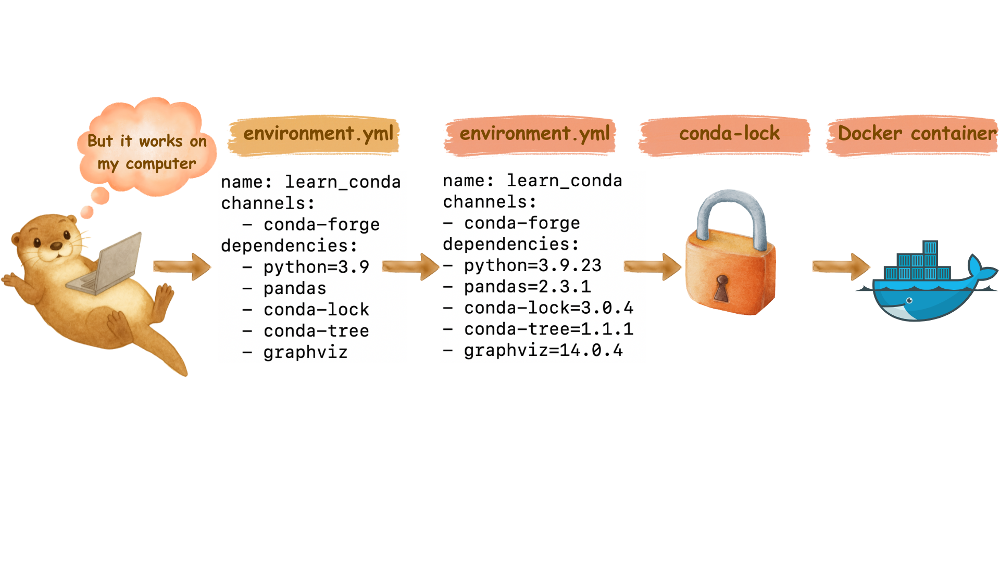

DSCI 522 Lecture 5
Non-interactive scripts
Sky Sheng
iClicker: How are you getting along with Docker?
(A)

(B)

(C)

(D)

🧐 Some questions from last week…
Q: “I did everything as instructed, why do I still get bugs?” 🥲
- Bad news: 🐛 are inevitable
- Debugging is one of the most important skills to have as a data scientist
- Good news: Enemies of 🐛:
- Documentation, attention to details, perseverance, clean code, testing…
Q: “conda is not locking my pip packages!” 😱
- Solution:
pip installpackages inside of your Dockerfile- (optional but recommended) Still add version numbers for your pip packages in
environment.ymlfile for documentation purposes
- (optional but recommended) Still add version numbers for your pip packages in
# build on top of template of minimal notebook
FROM quay.io/jupyter/minimal-notebook:afe30f0c9ad8
# copy all conda environment dependencies
COPY conda-linux-64.lock /tmp/conda-linux-64.lock
# conda install all the other packages
RUN mamba update --quiet --file /tmp/conda-linux-64.lock \
&& mamba clean --all -y -f \
&& fix-permissions "${CONDA_DIR}" \
&& fix-permissions "/home/${NB_USER}"
# install openai using pip
RUN pip install openai==1.57.0Q: “The data I’m currently using do not have any missing data, why do I still need to do data validation?”
- What about your future data?
- We set up the data validation pipeline so that we can easily validate new data, and get warnings if there are missing values in the future.
iClicker: Why do we use docker-compose file?
-(A) To create and customize our own docker
-(B) To easily launch and stop our docker container in one command
-(C) To document the packages we used so that we can easily share with others
-(D) To prepare for publishing our docker image on Docker Hub
-(E) To make our life harder 🤷♀️
Recap: Why do we need all of these? 🤯
Image generated by OpenAI GPT-5 and Canva
“I want more functionality in the docker container!”

Image generated by OpenAI GPT-5 and Canva
“docker run command is too LONG!”

Image generated by OpenAI GPT-5 and Canva
“I am tired of typing the same sequence of commands over and over again!”

Image generated by OpenAI GPT-5 and Canva
“I want others to easily use my docker container!”

Image generated by OpenAI GPT-5 and Canva
Real-world example: Nature
- If you ever submit a paper to Nature journals, you will be asked to upload your code & data to Code Ocean
Something to look forward to at the end of DSCI 522…
- 🤖 AI agents and fully automated data science workflows using Model Context Protocols (MCPs)
- 🐳 Most MCP servers are built using Docker containers

🎊 That’s all for Docker for now
- Docker Cheatsheet is available here
Today’s topic: Non-interactive scripts 📜
You have already been using scripts!
- GitHub repo: append_version_to_environment_yml
python update_enviroment_yml.py --root_dir="." --env_name="ai_env" --yml_name="environment.yml"
What is a script?
- A script is a plain text file that contains sequence of commands (e.g., written in R or Python). It is usually executed from top to bottom from the command line.
- Example: update_environment_yml.py
Read-eval-print-loop (REPL) framework (i.e., interactive mode)
- Read-eval-print-loop (REPL) framework is when the machine reads the input, evalutes/executes them through functions, print out the result to the user. 👀 –> ✅ –> 🖨️
- REPL example:
- Run code in console for R & Python
- Run code in cells of Jupyter Notebook
What are the problems with Jupyter Notebook?
- 🤔 Example 1: What if we turn update_environment_yml.py into a Jupyter Notebook and always run cell by cell?
- 😵💫 Example 2: A jupyter notebook to analyze images output by text-to-image generative models. Old commit history in November 2024 for this repository. My Problems are:
- 4800 images generated
- 25 visualization plots generated
What are the problems with Jupyter Notebook?
- 😵 Do you want to show every single step of your analysis in one single file to your reader?
- Remember my 5000-line R code that you roasted? 🔥
💡 What are the benefits of using scripts?
- Abstraction: Hide the complexity of the code from the user
- Reusability: The script can be reused by others
- e.g., I moved the update_environment_yml.py script out from my original repository and shared it with you
- Efficiency: The script can be run in parallel
- Automation: Scripts can be used with other tools (e.g., GNU Make) to automate the entire workflow
- Ease of use: The script can be run with a single command
- Ease of debugging: Modular code is easier to debug
🌟 Read-eval-print-loop (REPL) framework VS Scripts
| Aspect | REPL (e.g., Jupyter Notebook) | Scripts |
|---|---|---|
| Execution | Interactive, line-by-line or cell-by-cell | Batch mode, top to bottom |
| Best for | Solving small problems, developing code, exploratory analysis | Automation, production workflows, reproducible pipelines |
| Advantages | Immediate feedback, easy for small problems and experiments | Efficiency, automation, reusability, reproducibility |
| Examples | R/Python console, Jupyter Notebook cells | .py, .R files run from command line |
| Complexity | Can become messy with large analyses | Better for complex, modular workflows |
| Debugging | Harder with non-linear execution | Easier with linear, modular code |
🏄🏻♀️ Let’s dive into python scripts!
- Scan through the update_environment_yml.py script and discuss the following questions with your neighbor:
- What is the structure of this script?
- Where are the documentation comments?
- What is the structure and style of the documentation?
- Where is the packages get imported?
- What is the purpose of
@click.option()? - Why do we need
if __name__ == "__main__":at the end?
Example python script organization
Tips for python scripts
Note
if __name__ == "__main__":lets you source the other functions in the script without running the main function.clickcommands need to be placed right above the main function.